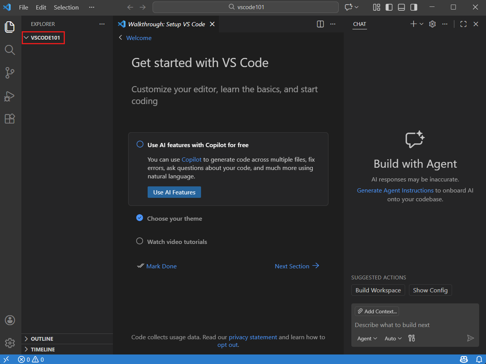
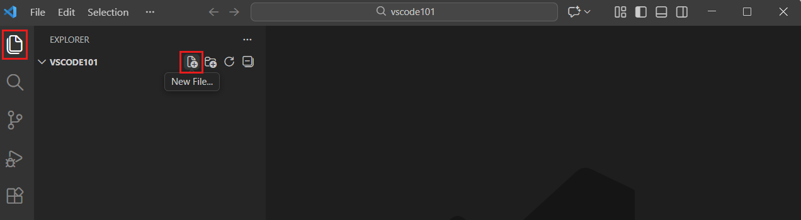
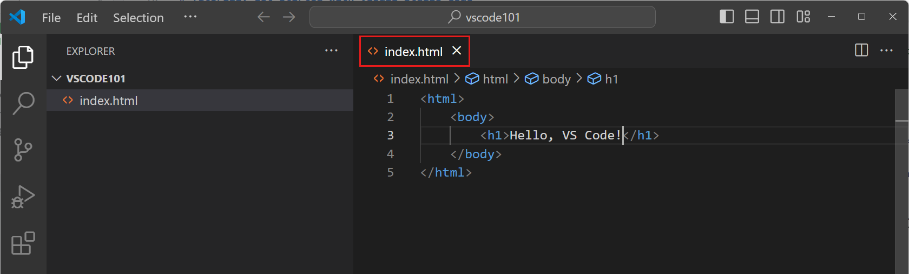
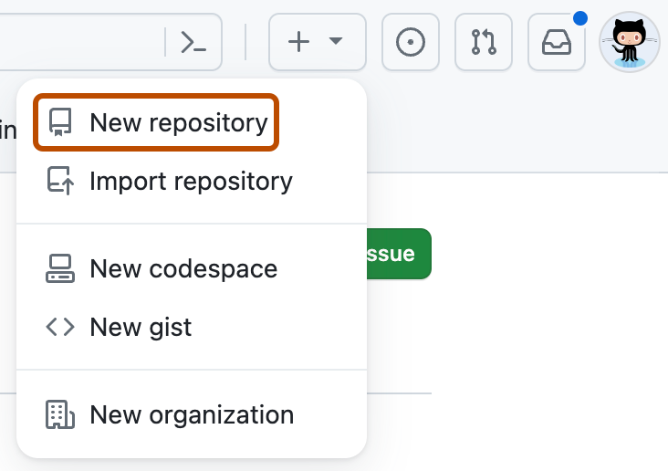
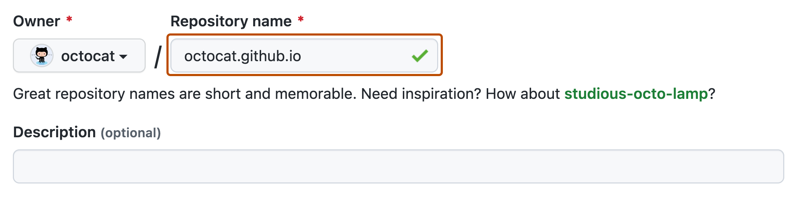
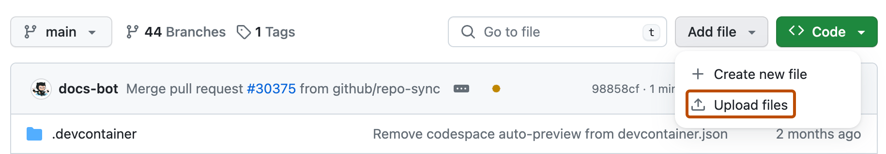
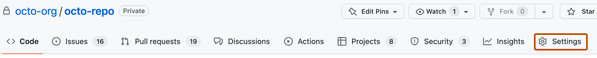
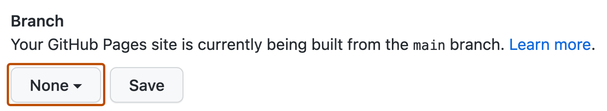
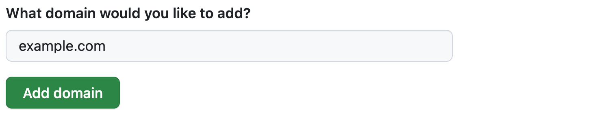

코드는 컴퓨터가 할 일을 적은 글입니다. 처음부터 긴 코드를 외울 필요는 없어요. 결과를 예상하고 → 실행하고 → 한 줄을 바꾸고 → 달라진 이유를 말하는 것이 이 책의 공부 방법이에요. 처음에는 복사해도 괜찮아요. 두 번째에는 한 줄을 직접 바꾸고, 세 번째에는 책을 덮고 짧은 예제를 다시 써 보세요.
① 예상하기② 실행하기③ 바꿔 보기④ 내 말로 설명하기
각 예제는 독립적으로 실행합니다. 앞 예제의 변수를 다음 예제에서 자동으로 가져오지 않습니다. ‘일부 교체’라고 쓴 앱 코드는 지정한 위치에만 넣으세요. 오류는 실력 평가가 아니라 컴퓨터가 알려 주는 수정 위치예요.
책 속 이름과 가격은 가상입니다. 상담 웹은 소개와 예약 희망 시간 연습, 뷰티 앱은 스타일 목록과 찜 기능까지 만듭니다. 실제 예약 전송·확정, 결제, 상담 기록 관리 기능은 이 기초 과정의 다음 단계입니다.
장 완료 표시는 현재 브라우저에만 저장됩니다. 브라우저 설정에 따라 저장되지 않을 수 있어요. 본문·코드·도형은 인터넷 없이 볼 수 있고, 외부 참고 링크와 Kotlin 온라인 실행에는 인터넷이 필요합니다.
LESSON 01
1장. 내 프로젝트 만들기: 설치·폴더·파일·저장·열기
코드를 배우기 전에: 다운로드·설치·실행은 서로 달라요.
다운로드는 인터넷의 파일을 내 컴퓨터로 받는 일, 설치는 그 프로그램을 사용할 준비를 하는 일, 실행은 준비된 프로그램을 여는 일이에요. 다운로드 버튼을 한 번 눌렀다고 설치가 끝난 것은 아닙니다. 이 교재는 키보드와 마우스가 있는 Windows PC 또는 Mac을 기준으로 합니다. 휴대전화만으로 진행하는 수업은 아니에요.
교재 ZIP은 먼저 풀어 주세요. Windows: 다운로드 폴더에서 ZIP 우클릭 → 모두 압축 풀기 → 추출. Mac: Finder의 다운로드에서 ZIP을 두 번 클릭. 생긴 폴더의 index.html을 두 번 눌러 교재를 엽니다. ZIP 미리보기 안에서 예제 파일을 수정하지 마세요.
클릭은 마우스 왼쪽 버튼 한 번, 더블클릭은 빠르게 두 번, 우클릭은 오른쪽 버튼으로 메뉴를 여는 일입니다. Mac 트랙패드는 두 손가락 클릭으로 우클릭할 수 있어요. 주소창은 브라우저 맨 위에 사이트 주소를 쓰는 긴 칸입니다. 아래 공식 링크를 누르면 주소를 직접 입력하지 않아도 돼요.
개발툴은 무엇이고, 어떤 프로그램을 열어야 하나요?
개발은 프로그램을 만드는 일이고, 개발툴은 그 일을 돕는 도구예요. 요리할 때 칼과 냄비의 역할이 다르듯 코드 작성과 결과 확인에는 다른 프로그램을 씁니다. 코드는 컴퓨터가 이해할 약속에 맞춰 적은 글이고, 소스 파일은 그 글을 저장한 파일입니다.
도구
쉽게 말하면
이 수업에서 할 일
파일 탐색기(Windows) / Finder(Mac)
컴퓨터의 서랍
폴더 만들기, 받은 파일 찾기, 이름 확인
VS Code · Visual Studio Code
코드를 쓰는 공책인 코드 편집기
HTML·CSS·JavaScript 작성과 저장
Chrome 또는 Edge · 웹 브라우저
만든 웹페이지를 보여 주는 프로그램
교재 읽기, 결과 확인, 새로고침
브라우저 개발자 도구
브라우저 안에 있는 검사 도구
Console에서 출력·오류 확인. 별도 설치 없음
Live Server · 나중에 추가할 확장
내 PC에서 웹 파일을 제공하는 작은 서버
저장 기능 실습에서 일정한 http 주소로 열기
GitHub Pages · 17장부터
인터넷에 파일을 공개하는 호스팅
다른 사람이 접속할 공개 주소 만들기
지금 필요한 것은 브라우저와 VS Code 두 가지예요.
VS Code는 무료 코드 편집기입니다. 이름이 비슷한 Visual Studio와 다른 프로그램이므로 공식 페이지의 전체 이름 Visual Studio Code를 확인하세요. Node.js, Git, Java, Android Studio는 이 웹 기초 수업을 시작하기 위해 설치할 필요가 없습니다. HTML은 화면의 구조, CSS는 꾸밈, JavaScript는 동작을 적는 언어이며 각각 별도 앱으로 설치하는 것이 아니에요.
Windows 시작 메뉴에서 Edge를 검색해 열거나, Mac Dock에서 Safari를 열면 다운로드 사이트에 갈 수 있습니다. 이미 Chrome/Edge가 있으면 그대로 사용하세요. Chrome을 새로 쓰려면 Google Chrome 공식 다운로드 → Chrome 다운로드 → 받은 파일을 여세요. Windows는 설치 프로그램 안내를 끝까지 진행하고, Mac은 .dmg를 열어 Chrome 아이콘을 Applications로 끌어 놓은 뒤 응용 프로그램에서 실행합니다. 브라우저 로그인은 수업의 필수 조건이 아닙니다.
S1VS Code 공식 다운로드 페이지 열기
1브라우저에서 https://code.visualstudio.com/download 열기
2Windows PC → Windows의 User Installer 선택 / Mac → Mac 다운로드 선택
3받은 파일은 파일 탐색기 또는 Finder의 다운로드 폴더에서 찾기
완료 확인 VSCodeUserSetup…exe(Windows) 또는 VSCode…zip(Mac) 파일이 다운로드 폴더에 있어요.
클릭 순서를 단순화한 교재용 그림입니다. 실제 서비스 화면 캡처는 아닙니다. 실제 화면에서는 같은 메뉴 이름을 찾아가세요.
내 컴퓨터에 맞는 파일을 고르는 방법
VS Code 공식 다운로드 페이지 열기. Windows는 설정 → 시스템 → 정보 → 시스템 종류에서 x64인지 ARM64인지 확인하고 같은 항목을 선택하세요. Mac은 왼쪽 위 사과 메뉴 → 이 Mac에 관하여: 칩에 Apple M…이면 Apple silicon, 프로세서에 Intel이면 Intel입니다. Mac Universal 항목이 제공되면 둘 모두를 지원합니다. 버전 숫자와 파일명 뒷부분은 시기에 따라 달라져요.
S2Windows: 다운로드한 설치 파일 실행하기
1다운로드 폴더에서 VSCodeUserSetup…exe 더블클릭
2약관을 읽고 동의하는 경우 동의 → Next(다음)
3설치 위치·시작 메뉴는 기본값 → 추가 작업의 Add to PATH 기본 선택 유지
4Install(설치) → 완료될 때까지 기다리기
5Launch Visual Studio Code 선택 → Finish(마침)
완료 확인 파란 아이콘의 Visual Studio Code 창이 열립니다. 설치 파일을 다시 여는 대신 시작 메뉴에서 Visual Studio Code를 검색해 실행할 수 있어요.
클릭 순서를 단순화한 교재용 그림입니다. 실제 서비스 화면 캡처는 아닙니다. 실제 화면에서는 같은 메뉴 이름을 찾아가세요.
S3Mac: ZIP을 풀고 응용 프로그램에 넣기
1Finder → 다운로드 → VSCode…zip 더블클릭
2풀린 Visual Studio Code.app을 Applications(응용 프로그램) 폴더로 드래그
3Finder → 응용 프로그램 → Visual Studio Code 더블클릭
4인터넷에서 받은 앱 확인창이 나오면 출처를 확인하고 열기
완료 확인 VS Code 창이 열리고 응용 프로그램 폴더에 앱이 있습니다. ZIP 파일 자체를 Dock에 넣지 마세요.
클릭 순서를 단순화한 교재용 그림입니다. 실제 서비스 화면 캡처는 아닙니다. 실제 화면에서는 같은 메뉴 이름을 찾아가세요.
처음 열린 VS Code에서 무엇을 해야 하나요?
Welcome(시작) 화면이 보이면 설치 성공입니다. 테마·AI·로그인 소개 화면은 건너뛰어도 됩니다. 파일을 만들고 저장하는 수업에 Microsoft/GitHub 로그인이나 유료 구독은 필요하지 않아요. 교재는 영어 메뉴 이름을 기준으로 설명하며 한글 메뉴 이름도 함께 적습니다. 메뉴는 창 위쪽에 있고, Mac에서는 화면 맨 위 메뉴 막대에 있어요.
한글 메뉴를 원하면 왼쪽 네모 네 개 모양 Extensions(확장) → Korean Language Pack 검색 → 게시자가 Microsoft인 항목 → Install → Change Language and Restart. 선택 사항이므로 영어 상태로 계속해도 됩니다. Windows에서 메뉴가 보이지 않으면 Alt를 한 번 눌러 보세요.
설치 확인 연습: VS Code를 닫고 Windows 시작 메뉴 또는 Mac 응용 프로그램에서 다시 여세요. Welcome 화면까지 스스로 열 수 있으면 다음의 폴더 만들기로 갑니다. Windows 설치 중 오류가 나오면 파일 이름·오류 문장을 기록하고 공식 설치 안내를 확인하세요. 학교·회사 PC에서 설치 권한이 없다면 관리자에게 문의합니다.
공식 설치 안내: Windows · macOS. 설치 뒤 아래 W1부터 진행하세요. 아직 코드를 적지 않아도 됩니다.
파일 이름 뒤의 .html은 왜 중요한가요?
확장자는 파일 종류를 알리는 이름 끝부분입니다. index.html은 웹 문서, style.css는 꾸밈 파일, app.js는 동작 파일이에요. Windows 11 파일 탐색기 → 보기 → 표시 → 파일 확장명을 켜세요. Windows 10은 보기 탭의 파일 확장명 체크. Mac은 Finder → 설정(또는 환경설정) → 고급 → 모든 파일 확장자 보기. index.html.txt라면 파일 이름이 잘못된 것입니다.
코드 복사 버튼은 글을 잠시 복사해 둘 뿐 파일로 저장하지 않습니다. VS Code에서 대상 파일을 열고 편집 영역을 클릭 → 붙여넣기(Ctrl+V / Mac ⌘+V) → 저장(Ctrl+S / ⌘+S) 순서로 진행하세요. 브라우저 주소창이나 교재 본문에 붙이지 않습니다.
프로젝트는 거창한 새 프로그램이 아니라, 함께 작업할 파일 묶음이에요.
문서를 만들 때 글 파일과 사진을 같은 폴더에 모으듯, 웹도 HTML·CSS·JavaScript·이미지를 한 폴더에 모읍니다. 이 작업 묶음을 프로젝트라고 불러요. VS Code에서는 그 폴더를 열면 작업 공간이 됩니다. 특별한 “프로젝트 생성” 마법사를 꼭 거칠 필요는 없어요.
이번 프로젝트 폴더 이름은 counseling-practice입니다. 폴더는 파일을 모으는 곳이고, 그 안의 index.html은 브라우저가 읽을 문서 파일이에요. 폴더 이름과 파일 이름을 구별하세요. 아래 순서로 따라 하면 첫 화면까지 이어집니다.
W1바탕화면에 작업 폴더 만들기
새 폴더counseling-practice
Windows 바탕화면 빈 곳 우클릭 → 새로 만들기 → 폴더. 이름을 counseling-practice로 적어요. macOS는 Finder에서 파일 → 새로운 폴더를 사용해요.
완료 확인 빈 counseling-practice 폴더가 하나 생겼어요.
키보드 조작을 설명하는 교재용 그림입니다. 실제 프로그램 화면 캡처는 아닙니다.
W2File → Open Folder로 그 폴더 열기
할 일 VS Code 위쪽 File → Open Folder… → 방금 만든 counseling-practice 선택 → Select Folder(맥은 Open).

완료 확인 왼쪽 Explorer 위에 COUNSELING-PRACTICE가 보여요. 공식 예시 그림의 VSCODE101은 폴더 이름 예시입니다.
직접 만든 빈 폴더에서 Workspace Trust 질문이 나오면 그 폴더임을 확인하고 신뢰를 선택하세요. 다른 출처의 작업 폴더는 내용을 확인한 뒤 결정합니다.
원본 화면: Microsoft VS Code 문서. 원본 화면 위에 교재의 안내 표시를 겹쳐 두었습니다. 운영체제·버전에 따라 아이콘 위치와 예시 값은 달라질 수 있어요.
W3왼쪽 새 파일 아이콘 누르기
할 일 왼쪽 종이 두 장 모양 Explorer를 누르고, 폴더 이름 줄의 종이+ 아이콘(New File)을 눌러요.

완료 확인 폴더 아래에 파일 이름을 적는 칸이 열려요.
원본 화면: Microsoft VS Code 문서. 원본 화면 위에 교재의 안내 표시를 겹쳐 두었습니다. 운영체제·버전에 따라 아이콘 위치와 예시 값은 달라질 수 있어요.
W4index.html 입력 → Enter
할 일 파일 이름 칸에 index.html을 정확히 적고 Enter. 오른쪽 빈 편집 영역에 이 장의 첫 HTML 코드를 넣어요.

완료 확인 상단 탭과 왼쪽 목록에 index.html이 보여요. index.html.txt가 아니어야 합니다.
원본 화면: Microsoft VS Code 문서. 원본 화면 위에 교재의 안내 표시를 겹쳐 두었습니다. 운영체제·버전에 따라 아이콘 위치와 예시 값은 달라질 수 있어요.
W5작성한 파일 저장
CtrlS
Windows는 Ctrl+S, macOS는 ⌘+S. 코드를 바꿀 때마다 저장해요.
완료 확인 탭 이름 옆의 미저장 점이 사라져요. 코드를 저장한 것이고, 아직 브라우저 화면을 새로 그린 것은 아닙니다.
키보드 조작을 설명하는 교재용 그림입니다. 실제 프로그램 화면 캡처는 아닙니다.
W6브라우저에서 파일 열기
ChromeCtrl + Oindex.html
Chrome을 열고 Ctrl+O(맥은 ⌘+O) → counseling-practice 안의 index.html 선택 → 열기. 또는 파일 탐색기에서 index.html을 두 번 눌러요.
완료 확인 코드 대신 큰 제목과 소개 문장이 보이면 성공입니다.
키보드 조작을 설명하는 교재용 그림입니다. 실제 프로그램 화면 캡처는 아닙니다.
W7고친 화면 확인
VS Code: 저장Chrome: 새로고침
HTML 제목 한 글자 변경 → Ctrl+S → 브라우저로 이동 → 새로고침 버튼 또는 Ctrl+R(맥은 ⌘+R).
완료 확인 바꾼 글자가 브라우저에 나타납니다. 이전 화면이면 파일 경로와 저장 여부를 먼저 확인하세요.
키보드 조작을 설명하는 교재용 그림입니다. 실제 프로그램 화면 캡처는 아닙니다.
파일을 만드는 것부터 화면 확인까지
브라우저는 인터넷 검색만 하는 프로그램이 아니라 HTML 파일을 읽어 화면으로 보여 주는 프로그램이에요. VS Code는 그 파일을 쓰고 고치는 편집기입니다. 두 프로그램의 역할을 먼저 나누어 생각해 보세요.
이번 장은 VS Code에 글을 쓰고 저장한 다음, 같은 파일을 브라우저로 열어 보는 한 바퀴를 완성합니다. 설치·폴더·파일·저장·열기 중 어느 단계에서 막혔는지 알 수 있도록 완료 화면도 확인합니다.
이제 계산 결과를 웹 화면으로 옮길 차례예요. HTML은 제목·문단·입력창처럼 내용의 의미를 표시합니다. CSS는 모양과 배치를 정하고, JavaScript는 입력·클릭에 반응해요. 웹 브라우저는 이 파일들을 읽어 화면을 그리는 프로그램이에요.
index.html 내용style.css 모양app.js 동작
VS Code 공식 사이트에서 운영체제에 맞는 안정 버전을 설치해요. Windows·macOS 모두 사용할 수 있어요.
바탕화면에 counseling-practice 폴더를 만들고 VS Code의 File → Open Folder로 여세요.
탐색기의 New File 버튼으로 index.html을 만들어요. 파일 이름이 index.html.txt가 되지 않도록 확장자까지 확인하세요.
아래 전체 코드를 입력하고 Ctrl+S(맥은 ⌘S)로 저장해요. 파일 탐색기에서 index.html을 두 번 눌러 브라우저로 열어요.
제목을 바꾸고 저장한 뒤 브라우저를 새로고침해요. VS Code 저장과 브라우저 새로고침은 별개예요.
예제 01 · HTML
첫 웹 문서 전체
어디에 쓰나요? VS Code의 index.html 전체를 교체하거나 아래 연습장에서 실행하세요.
먼저 예상하세요. 실행 전 아래 코드를 읽고 결과를 종이에 한 줄 써 보세요.
기대 결과
브라우저 탭: 마음쉼 상담실
본문: 큰 제목 마음쉼 상담실 + 소개 문장
코드를 읽는 순서
코드 / 기호
무슨 뜻인가요?
<h1>내용</h1>
여는 태그 + 내용 + 닫는 태그를 합쳐 요소라고 해요. h1은 가장 중요한 제목입니다.
<head>
문서 설정을 넣는 구역이에요. 화면 본문은 body에 써요.
charset="utf-8"
한글을 포함한 문자를 읽을 방식을 지정해요.
lang="ko"
문서의 언어가 한국어임을 알려요. 속성은 태그에 붙이는 추가 정보입니다.
한 군데 바꾸기
h1의 상담실 이름을 바꾸고 소개 문단을 하나 더 쓰세요.
힌트와 풀이 보기
body 안에 <p>예약 없이도 소개를 읽을 수 있어요.</p>를 추가하세요. title을 바꾸면 탭 이름, h1을 바꾸면 본문 제목이 달라져요.
책을 잠깐 덮어 보세요
title과 h1은 각각 어디에 보이나요?
확인 답안과 이유
title은 브라우저 탭 제목, h1은 본문 큰 제목으로 보입니다.
혼자 해 보는 과제
index.html을 직접 만들고 이름과 소개 문장을 바꾼 화면을 보여 주세요. 코드를 저장하지 않은 상태와 저장한 뒤 새로고침한 상태의 차이를 설명하세요.
선생님 수업 메모
수업 전 파일 확장자 표시와 한글 입력 전환을 확인하세요. Live Server는 필수가 아닙니다. 파일 열기로 첫 성공을 만들고 15장에서 로컬 서버를 안내합니다.
문서에서 제목과 본문을 구별하듯 HTML은 h1·p·a 같은 이름으로 내용의 종류를 표시해요. 태그 안의 영어는 사용자가 그대로 읽는 문장이 아니라 브라우저가 이해하는 표지입니다.
<h1>마음쉼</h1>에서 여는 태그, 표시할 내용, 닫는 태그를 따로 찾아보세요. 처음에는 제목·문단 두 개만 쓰고, 익숙해지면 목록·링크·사진을 더합니다. 태그를 넣었다고 저장이나 실행까지 자동으로 되는 것은 아니에요.
태그는 보기 좋게 만들기보다 “이 내용은 무엇인가”를 알려 줘요. 큰 글자를 만들려고 h1을 여러 번 쓰기보다 페이지 제목 h1, 구역 제목 h2, 일반 문장 p로 의미를 나누세요. 속성은 여는 태그 안에 적는 추가 설정입니다. 링크의 목적지는 href, 이미지 파일 위치는 src에 씁니다.
예제 02 · HTML
상담 소개 카드와 이동 링크
어디에 쓰나요? HTML 조각입니다. 1장 index.html의 body 안을 교체하세요. 연습장에서는 조각만 실행해도 됩니다.
먼저 예상하세요. 실행 전 아래 코드를 읽고 결과를 종이에 한 줄 써 보세요.
기대 결과
제목·소개·목록·링크가 세로로 나타납니다. 링크는 운영 시간 구역으로 이동합니다.
코드를 읽는 순서
코드 / 기호
무슨 뜻인가요?
main / section
핵심 내용과 의미 있는 구역을 표시해요.
ul / li
순서 없는 목록과 각 항목입니다. li는 ul 안에 들어가요.
href="#hours"
같은 문서의 id="hours" 요소로 이동해요. id는 문서 안에서 중복 없이 붙입니다.
한 군데 바꾸기
온라인 상담 항목을 목록에 추가하세요.
힌트와 풀이 보기
<li>진행 방식: 온라인</li>를 ul 안에 넣으세요. h2 제목과 내용이 구역별로 묶였는지 확인하세요.
예제 03 · HTML
그림과 파일 경로 읽기
어디에 쓰나요? body 안에 추가하는 조각입니다. data:로 시작하는 긴 src는 이 예제의 내장 그림이에요.
먼저 예상하세요. 실행 전 아래 코드를 읽고 결과를 종이에 한 줄 써 보세요.
기대 결과
초록색 직사각형 그림과 설명 문장이 보입니다.
코드를 읽는 순서
코드 / 기호
무슨 뜻인가요?
src
이미지 위치예요. 이 예제는 외부 파일 없이 보이도록 작은 그림 데이터를 직접 넣었어요.
alt
이미지가 전달하는 의미를 글자로 설명해요. 장식만 하는 이미지는 alt=""로 표시할 수 있어요.
width / height
그림의 표시 크기를 지정합니다.
한 군데 바꾸기
내 파일로 바꾸려면 images 폴더에 room.jpg를 넣고 src를 images/room.jpg로 바꾸세요.
힌트와 풀이 보기
index.html 옆에 images 폴더가 있어야 해요. 이 경로는 현재 HTML 파일을 기준으로 찾습니다. 직접 촬영했거나 사용 권한이 있는 이미지를 사용하세요.
폴더 모양
HTML에서 쓰는 경로
index.html 옆 room.jpg
room.jpg
index.html 옆 images 폴더 안 room.jpg
images/room.jpg
상위 폴더 이미지
../room.jpg — ..는 한 단계 위예요.
책을 잠깐 덮어 보세요
href와 src는 무엇이 다른가요?
확인 답안과 이유
href는 링크 목적지, src는 이미지 등 외부 자원을 불러올 위치예요.
혼자 해 보는 과제
서비스 두 개를 section으로 나누고 각각 h2·p·ul을 넣으세요. 페이지 아래 안내 구역으로 이동하는 링크도 만드세요.
선생님 수업 메모
태그 전부를 외우게 하지 마세요. h1·h2·p·ul·li·a만으로 구성한 다음 의미를 설명하게 하세요.
앞 네 장에서 HTML로 내용을 쓰고 CSS로 모양을 정했어요. JavaScript는 그 화면에서 클릭·입력·계산 같은 동작을 처리하는 언어입니다. 지금부터는 화면 전체를 고치기 전에 작은 명령을 따로 실행해 봅니다.
아래 연습장의 실행은 교재 안의 작은 출력 실험이에요. Console은 개발자가 값을 확인하는 창입니다. 여기서 출력한 글자가 최종 웹페이지 본문에 자동으로 나타나지는 않아요. 12장에서 페이지 요소와 연결합니다.
컴퓨터는 마음을 짐작하지 못해요. “적당히 예약을 받아 줘” 대신 “남은 자리를 3으로 정한다. 한 명이 신청하면 1을 뺀다. 남은 자리를 보여 준다”처럼 순서를 정확히 적어야 해요. 이 순서가 알고리즘입니다. 그것을 언어의 규칙에 맞게 적으면 코드가 돼요.
낱말
지금 필요한 뜻
파일
이름을 붙여 저장한 정보 한 묶음. .html, .kt는 종류를 나타내는 확장자예요.
폴더
여러 파일을 모으는 곳. 파일과 폴더는 다른 것이에요.
실행
작성한 명령을 컴퓨터가 실제로 수행하는 것. 저장만 해서는 실행되지 않아요.
문법
코드를 쓰는 규칙. 따옴표나 괄호도 이 규칙의 일부예요.
오류 / 디버깅
규칙이나 동작이 잘못된 상태 / 원인을 찾아 고치는 과정.
이 책이 첫 연습장이에요
아래 코드 칸을 누르면 직접 수정할 수 있어요. ‘실행’을 누르면 바로 아래에 결과가 나옵니다. 이 작은 실험을 마친 뒤 8장에서 파일을 만들어 웹 화면을 띄울 거예요. 별도로 실행하려면 크롬 메뉴 → 도구 더보기 → 개발자 도구 → Console 탭을 여세요. 신뢰하지 않는 코드를 콘솔에 붙이지 마세요.
예제 08 · JS
첫 인사 두 줄
어디에 쓰나요? 아래 연습장에서 실행하세요. 별도로 연습하려면 크롬 개발자 도구의 Console에 입력하세요.
먼저 예상하세요. 실행 전 아래 코드를 읽고 결과를 종이에 한 줄 써 보세요.
기대 결과
반가워요
나의 상담 서비스
코드를 읽는 순서
코드 / 기호
무슨 뜻인가요?
console.log
화면의 출력 창에 내용을 보여 달라는 이미 만들어진 함수의 이름이에요. 함수의 원리는 9장에서 배워요.
("반가워요")
소괄호 안에 보여 줄 내용을 넣어요. 따옴표는 글자의 시작과 끝이에요.
;
한 명령의 끝을 표시합니다. 이 책에서는 일관되게 붙여요.
한 군데 바꾸기
두 번째 줄을 “오늘 첫 코드를 썼어요”로 바꾸세요.
힌트와 풀이 보기
따옴표 안쪽 내용만 바꿔요. 출력 순서는 위에서 아래입니다.
예제 09 · JS
글자와 계산은 다르게 읽혀요
어디에 쓰나요? 아래 연습장에서 실행하세요. 별도로 연습하려면 크롬 개발자 도구의 Console에 입력하세요.
먼저 예상하세요. 실행 전 아래 코드를 읽고 결과를 종이에 한 줄 써 보세요.
기대 결과
15
105
코드를 읽는 순서
코드 / 기호
무슨 뜻인가요?
10 + 5
숫자끼리 더하므로 15가 됩니다.
"10" + "5"
글자 두 묶음을 이어 붙이므로 105라는 글자가 됩니다. 따옴표가 계산 방법을 바꿔요.
한 군데 바꾸기
첫 줄은 20이, 둘째 줄은 205가 나오도록 바꾸세요.
힌트와 풀이 보기
10을 두 곳 모두 20으로 바꾸면 돼요. 숫자 20과 문자열 "20"의 차이를 말해 보세요.
책을 잠깐 덮어 보세요
명령을 저장하는 것과 실행하는 것은 어떻게 다른가요?
확인 답안과 이유
저장은 코드를 보관하는 일이고 실행은 컴퓨터가 그 명령을 수행하는 일이에요. 출력 명령이 있어야 출력 창에서 결과를 볼 수 있어요.
혼자 해 보는 과제
인사·직업·만들고 싶은 서비스를 각각 한 줄씩 출력하세요. 완료 기준: 세 줄의 순서를 바꾸어 결과 차이를 설명합니다.
선생님 수업 메모
학습자가 마우스와 키보드를 직접 잡게 하세요. 첫 15분에는 용어를 늘리지 말고 실행 성공 한 번을 만드세요.
예약 가능 인원이 3명이라고 해 봅시다. 3은 계산할 숫자 값이고, 그 숫자가 무엇을 의미하는지 알려 주는 이름을 remaining이라고 붙일 수 있어요. 영어로 남은 수라는 뜻입니다. 컴퓨터가 영어 뜻을 해석해서 동작하는 것은 아니고, 우리가 읽기 좋은 이름을 고른 거예요.
let remaining = 3을 “변경 가능한 이름 remaining을 처음 만들고 숫자 3을 연결한다”라고 읽어 보세요. 이름을 처음 만드는 일을 선언, 값을 연결하는 일을 대입이라고 합니다. 이 한 줄에서는 두 일을 함께 해요.
코드에서 remaining을 따옴표 없이 쓰면 현재 연결된 값을 읽습니다. "remaining"처럼 따옴표로 감싸면 변수 이름을 읽는 명령이 아니라 r·e·m…이라는 글자 값이 됩니다. 이 차이를 직접 출력해서 확인할 수 있어요.
예제 10 · JS
이름 읽기와 글자 출력은 달라요
어디에 쓰나요? 아래 연습장에서 실행하세요. 별도로 연습하려면 크롬 개발자 도구의 Console에 입력하세요.
먼저 예상하세요. 실행 전 아래 코드를 읽고 결과를 종이에 한 줄 써 보세요.
기대 결과
3
remaining
2
코드를 읽는 순서
코드 / 기호
무슨 뜻인가요?
remaining
현재 연결된 숫자를 읽습니다.
"remaining"
따옴표 안 글자를 그대로 사용합니다.
remaining = 2
새 이름을 만드는 것이 아니라 기존 이름의 값을 바꾸므로 let를 다시 쓰지 않아요.
한 군데 바꾸기
처음 값 3을 5로 바꾸고 출력 세 줄을 예상하세요.
힌트와 풀이 보기
5 / remaining / 2가 나옵니다. 마지막 줄은 중간에 2로 재대입했기 때문이에요.
=는 같다는 판정이 아니라, 새 값을 연결하라는 명령이에요.
remaining = remaining - 1을 수학의 등식처럼 보면 이해하기 어렵습니다. 오른쪽의 remaining을 먼저 읽고, 1을 빼 계산한 뒤, 그 새 결과를 왼쪽 remaining에 다시 연결해요. 옛값 3을 읽고 계산한 새 값 2를 넣는 것입니다.
나중에 값을 다시 넣을 이름은 let, 다시 넣지 않을 이름은 const를 사용합니다. “고정한다”는 것은 이 이름의 재대입을 막는다는 뜻입니다. 객체 내부까지 모두 바꿀 수 없게 만든다는 뜻은 아니며, 객체 장에서 다시 확인해요.
값은 프로그램이 다루는 정보예요. 50000은 숫자 값, "커트"는 글자 값입니다. 변수는 값을 나중에 다시 사용할 수 있도록 이름을 붙이는 방법이에요. 같은 가격을 여러 줄에 적으면 바꿀 때 빠뜨리기 쉬우니 price라는 이름으로 한 번 정해 두는 거예요.
이름 price현재 값 50000price를 쓰면 50000을 읽음
JavaScript에서는 const로 재대입하지 않을 이름, let으로 재대입할 이름을 만들어요. price와 Price는 다릅니다. const로 만든 객체나 배열의 내부까지 변경 불가능한 것은 아니에요. 지금은 숫자·글자 값으로 연습해요.
예제 11 · JS
가격에 이름 붙이기
어디에 쓰나요? 아래 연습장에서 실행하세요. 별도로 연습하려면 크롬 개발자 도구의 Console에 입력하세요.
먼저 예상하세요. 실행 전 아래 코드를 읽고 결과를 종이에 한 줄 써 보세요.
기대 결과
100000
코드를 읽는 순서
코드 / 기호
무슨 뜻인가요?
const price = 50000
선언: price라는 이름을 만들고 50000을 연결해요. =는 “같다”가 아니라 오른쪽 값을 왼쪽 이름에 대입한다는 뜻이에요.
price * count
두 이름에 연결된 값을 읽어 50000 × 2를 계산해요. *는 곱하기입니다.
한 군데 바꾸기
인원을 3명으로 바꿔 보세요.
힌트와 풀이 보기
count 값만 3으로 바꾸면 150000이 나옵니다. 같은 값이 여러 번 쓰일 때 변수의 장점이 커져요.
예제 12 · JS
남은 자리 바꾸기
어디에 쓰나요? 아래 연습장에서 실행하세요. 별도로 연습하려면 크롬 개발자 도구의 Console에 입력하세요.
먼저 예상하세요. 실행 전 아래 코드를 읽고 결과를 종이에 한 줄 써 보세요.
기대 결과
2
코드를 읽는 순서
코드 / 기호
무슨 뜻인가요?
let remaining = 3
변경할 수 있는 이름을 선언하고 처음 값을 3으로 정해요.
remaining = remaining - 1
먼저 오른쪽을 읽어요. 옛값 3에서 1을 빼 2를 구한 다음 그 2를 새 값으로 저장해요. 수학의 등식이 아닙니다.
한 군데 바꾸기
같은 감소 명령을 한 줄 더 넣고 결과를 예상하세요.
힌트와 풀이 보기
두 번째 감소가 읽는 값은 2예요. 그래서 1이 나옵니다.
실행 순서 실험실
실제 언어 실행기가 아니라, 위 코드의 값을 한 단계씩 추적한 설명입니다.
책을 잠깐 덮어 보세요
a = a + 1은 왜 말이 되나요? const와 let은 무엇이 다른가요?
확인 답안과 이유
오른쪽 옛값에 1을 더한 뒤 그 결과를 왼쪽 이름에 다시 넣어요. const는 재대입할 수 없고 let은 재대입할 수 있어요.
혼자 해 보는 과제
price=30000, count=2, discount=5000을 만들고 price × count − discount를 출력하세요. 기대 결과: 55000. 각 변수의 현재 값을 표로 그리세요.
선생님 수업 메모
종이 이름표와 숫자 쪽지를 사용하세요. =를 읽을 때 반드시 “오른쪽부터 계산해 왼쪽에 넣는다”고 말하게 하세요.
상담을 시작할 때 “인사한다 → 시간을 안내한다 → 질문을 받는다”는 일을 매번 합니다. 이 절차 전체에 시작 안내하기라는 이름을 붙여 두면 다음에는 그 이름만 말해도 어떤 순서인지 알 수 있어요. 프로그래밍의 함수도 여러 명령을 묶고 이름으로 다시 실행하게 하는 방법입니다.
함수는 수학 문제의 어려운 공식만을 뜻하지 않아요. 인사 문장을 출력하는 함수, 총액을 계산하는 함수, 입력이 비었는지 검사하는 함수처럼 작은 일을 맡깁니다. 함수마다 할 일 한 가지를 분명하게 정하면 읽기도 고치기도 쉬워져요.
먼저 입력도 계산도 없는 함수부터 시작합니다. “함수를 만든다”와 “함수를 실행한다”를 아래 예제에서 따로 봐요. 코드를 위에서 아래로 읽되, 함수 몸통 안으로 들어가는 시점은 호출할 때라는 점을 확인합니다.
예제 17 · JS
함수를 정의하고, 나중에 부르기
어디에 쓰나요? 아래 연습장에서 실행하세요. 별도로 연습하려면 크롬 개발자 도구의 Console에 입력하세요.
먼저 예상하세요. 실행 전 아래 코드를 읽고 결과를 종이에 한 줄 써 보세요.
기대 결과
안내 전
편안하게 이야기해 주세요.
안내 후
코드를 읽는 순서
코드 / 기호
무슨 뜻인가요?
function
함수를 정의하겠다는 예약어예요. 내가 붙이는 이름과 다릅니다.
welcome
내가 정한 함수 이름이에요. welcome이라는 단어 자체에 특별한 마법은 없고, greet로 바꾸면 호출하는 곳도 맞춰 바꿔요.
()
정의에서는 입력을 받을 자리예요. 지금은 입력이 없어서 비어 있어요. 호출에서는 실행을 요청하는 괄호예요.
{ … }
이 함수가 실행할 명령들의 범위, 즉 몸통이에요.
welcome()
이 줄을 만났을 때 함수 몸통으로 들어가 실행하고, 끝나면 다음 줄로 돌아옵니다.
한 군데 바꾸기
welcome() 호출만 지우고 실행한 뒤 다시 넣어 보세요.
힌트와 풀이 보기
호출을 지우면 안내 전·안내 후만 나옵니다. 정의가 남아 있어도 본문은 실행되지 않아요.
실행 순서 실험실
실제 언어 실행기가 아니라, 위 코드의 값을 한 단계씩 추적한 설명입니다.
입력값이 있으면, 같은 함수를 여러 상황에 써요.
한 사람 이름을 코드 속에 박아 두면 다른 사람에게 안내할 때 코드를 고쳐야 해요. 함수가 이름을 입력으로 받게 하면 같은 절차에 다른 이름만 보낼 수 있습니다. 정의에 적는 입력 이름은 매개변수, 실제 호출할 때 보내는 값은 인수라고 해요.
영어 낱말을 외우기보다 “여기에는 어떤 값을 받을까?”와 “이번에는 무엇을 보냈나?”를 물어보세요. 정의의 nickname 자리에 첫 호출은 연습별, 다음 호출은 연습달이 들어갑니다. 호출마다 입력은 달라질 수 있어요.
예제 18 · JS
이름만 바꿔 같은 안내 사용하기
어디에 쓰나요? 아래 연습장에서 실행하세요. 별도로 연습하려면 크롬 개발자 도구의 Console에 입력하세요.
먼저 예상하세요. 실행 전 아래 코드를 읽고 결과를 종이에 한 줄 써 보세요.
기대 결과
연습별님, 반가워요.
연습달님, 반가워요.
코드를 읽는 순서
코드 / 기호
무슨 뜻인가요?
nickname
함수 안에서 입력을 읽을 이름이에요. 호출 때 전달한 값으로 정해져요.
greet("연습별")
실제 글자 값을 인수로 보냅니다. 함수 이름에는 따옴표가 없고 글자 값에는 따옴표가 있어요.
한 군데 바꾸기
두 호출의 순서를 바꾸고 세 번째 이름도 보내 보세요.
힌트와 풀이 보기
정의는 고치지 않아도 호출 순서와 입력값에 따라 안내가 달라져요.
return은 화면 표시가 아니라, 계산한 값을 돌려주는 말이에요.
가격 계산을 맡긴 다음 그 결과로 결제 예정 금액을 다시 계산하고 싶다고 해 봅시다. 함수 안에서 금액을 출력하기만 하면 바깥의 계산은 그 출력 글자를 자동으로 받지 못해요. return으로 값을 돌려줘야 호출한 곳에서 저장하거나 더할 수 있어요.
아래에서는 30이라는 입력이 들어가고, 30000이라는 숫자가 나옵니다. 함수 호출 식 fee(30) 전체가 결과 숫자 30000처럼 쓰인다고 읽어 보세요. 그런 다음 바깥에서 5000을 더합니다. 출력은 마지막에 별도로 합니다.
예제 19 · JS
결과를 받아 다음 계산에 사용
어디에 쓰나요? 아래 연습장에서 실행하세요. 별도로 연습하려면 크롬 개발자 도구의 Console에 입력하세요.
먼저 예상하세요. 실행 전 아래 코드를 읽고 결과를 종이에 한 줄 써 보세요.
기대 결과
35000
코드를 읽는 순서
코드 / 기호
무슨 뜻인가요?
minutes
입력값 30에 붙이는 함수 안의 이름이에요.
return price
계산한 30000을 돌려주고 함수를 끝내요.
amount = fee(30)
호출이 돌려준 값을 amount에 연결합니다.
price
이 함수 안에서 선언한 지역 변수예요. 함수 밖에서는 amount를 쓰고, 안의 price를 바로 읽지 않아요.
한 군데 바꾸기
시간을 40으로 바꿔 먼저 결과를 예상하세요.
힌트와 풀이 보기
fee(40)는 40000을 돌려주므로 마지막 출력은 45000입니다.
지금 구별할 것
읽는 법
함수 정의
무슨 일을 할지 준비
함수 호출
그 일을 지금 실행하도록 요청
매개변수
입력받을 값의 함수 안 이름
인수
호출에서 보내는 실제 값
return
함수 바깥으로 결과값 전달
출력 함수
값을 출력 창에 보여 주는 별도 동작
말로 풀어 보는 확인 문제
“인원이 2명일 때 총액을 계산한다”면 입력은 인원, 처리는 가격×인원, 출력할 결과값은 총액입니다. 이 세 가지를 종이에 적고 함수를 만드세요. 함수 이름을 바꾸는 것만으로 계산 내용이 바뀌지는 않아요.
함수는 여러 명령을 하나로 묶고 이름을 붙여 다시 사용할 수 있게 만든 것이에요. 가격을 계산하는 절차를 total이라는 이름으로 만들어 두면 필요한 순간에 부를 수 있어요. 정의는 절차를 만들어 두는 일, 호출은 실제로 실행하라는 명령입니다. 정의만 해서는 함수 안의 계산이 수행되지 않아요.
입력: 가격, 인원함수: 곱하기반환: 총액
예제 20 · JS
가격 계산을 함수로 묶기
어디에 쓰나요? 아래 연습장에서 실행하세요. 별도로 연습하려면 크롬 개발자 도구의 Console에 입력하세요.
“내추럴 커트”라는 이름, 30000이라는 가격, 40이라는 소요 시간은 같은 서비스의 정보입니다. 따로 떨어뜨려 두면 어떤 가격이 어떤 서비스에 속하는지 헷갈릴 수 있어요. 관련 정보를 하나로 묶은 값이 객체입니다.
같은 항목을 가진 서비스를 여러 개 만들고 싶으면 그 객체의 항목과 동작을 정하는 규칙이 필요해요. 그 규칙을 정의하는 것이 클래스입니다. 클래스는 “커트 한 건”이 아니라 “서비스 한 건에는 어떤 정보가 있어야 하는가”를 설명합니다.
클래스로 만든 커트 객체와 펌 객체는 각각 다른 실제 데이터입니다. 인스턴스는 이처럼 클래스로 만든 개별 객체를 가리키는 말이에요. 여러 단어가 나와도 “정의한 규칙”과 “실제로 만든 값”을 구별하면 출발할 수 있어요.
내가 묻는 질문
코드에서 찾는 것
어떤 규칙으로 만들까?
class Service … — 클래스 정의
그 규칙으로 하나 만들어 볼까?
Service(…) 또는 new Service(…) — 객체 생성
만든 것을 어떤 이름으로 읽을까?
cut — 변수 이름
그 객체의 가격은?
cut.price — 속성 읽기
그 객체에게 안내 문장을 만들게 할까?
cut.label() — 메서드 호출
함수·속성·메서드도 역할로 구별해요.
속성은 객체 안에 붙여 둔 정보이고 메서드는 객체에 속한 함수예요. cut.price에는 괄호가 없으므로 현재 정보를 읽습니다. cut.label()에는 괄호가 있으므로 그 객체에 속한 절차를 호출합니다. 점(.)은 그 객체의 항목으로 들어간다고 읽어 보세요.
클래스 이름과 변수 이름은 내가 정합니다. 클래스는 Service처럼 대문자로 시작하고 변수·함수는 cut·showLabel처럼 소문자로 시작하는 관례를 사용하면 구분이 쉬워요. 다만 대문자라는 이유만으로 클래스라고 판단하지 말고 class 정의와 생성 위치를 확인하세요.
서비스 한 건에는 이름, 가격, 소요 시간이 함께 있어요. 이것을 각각 따로 관리하면 서로 뒤섞일 수 있어요. 객체는 관련 정보와 동작을 한 덩어리로 다루는 값입니다. 속성은 그 안의 데이터, 메서드는 그 안에 속한 함수예요. 클래스는 이런 객체를 만드는 규칙을 이름 붙여 정의한 것입니다. 클래스로 만든 개별 객체를 인스턴스라고도 불러요.
클래스 Service 이름·가격의 규칙객체 A 커트·30000객체 B 펌·70000
예제 24 · JS
어디를 보고 클래스라고 하나요?
어디에 쓰나요? 아래 연습장에서 실행하세요. 별도로 연습하려면 크롬 개발자 도구의 Console에 입력하세요.
먼저 예상하세요. 실행 전 아래 코드를 읽고 결과를 종이에 한 줄 써 보세요.
기대 결과
커트
펌: 70000원
코드를 읽는 순서
코드 / 기호
무슨 뜻인가요?
class Service
class라는 키워드 다음에 클래스 이름이 나와요. 이 부분이 객체 생성 규칙의 정의입니다.
constructor(name, price)
객체를 만들 때 필요한 초기 데이터를 받아요. constructor는 생성자예요. this는 지금 만들고 있는 객체를 가리켜요.
new Service("커트", 30000)
규칙을 사용해 실제 객체 하나를 만듭니다. cut은 그 객체에 접근하는 변수 이름입니다.
cut.name
점(.)으로 cut 객체의 name 속성을 읽어요. Service라는 클래스 이름과 cut이라는 변수 이름을 구분하세요.
perm.label()
perm 객체에 속한 label 메서드를 호출해요. 뒤의 ()는 실행 요청입니다.
한 군데 바꾸기
color라는 문자열 속성을 하나 더 받도록 바꾸고 두 객체의 색을 다르게 만드세요.
힌트와 풀이 보기
Kotlin: class Service(val name: String, val price: Int, val color: String). 생성할 때 Service("커트", 30000, "검정")처럼 세 값을 보냅니다. JS: 생성자 매개변수에 color를 추가하고 this.color = color;를 씁니다. new Service("커트", 30000, "검정")으로 만든 뒤 cut.color를 출력합니다.
예제 25 · JS
클래스 없이 객체를 직접 만들기
어디에 쓰나요? 아래 연습장에서 실행하세요. 별도로 연습하려면 크롬 개발자 도구의 Console에 입력하세요.
먼저 예상하세요. 실행 전 아래 코드를 읽고 결과를 종이에 한 줄 써 보세요.
기대 결과
개인 상담
60
true
코드를 읽는 순서
코드 / 기호
무슨 뜻인가요?
{ service: …, minutes: … }
객체 리터럴: 속성 이름과 값을 콜론으로 연결하고 쉼표로 나누는 문법입니다. 이 중괄호는 함수가 아니에요.
booking.minutes = 60
const는 booking의 재대입을 막지만 객체 내부 속성 변경은 가능해요.
null
의도적으로 값이 없음을 나타내요. 속성이 없어서 읽는 undefined와 구별합니다.
한 군데 바꾸기
price: 50000 속성을 추가하고 출력하세요.
힌트와 풀이 보기
객체 안에 , price: 50000을 더하고 console.log(booking.price);로 읽어요.
코드에서 찾을 것
식별하는 방법
변수
값에 붙인 이름. const cut = …
함수
호출하면 실행할 절차. function total()
클래스
객체 생성 규칙. class Service
객체
클래스에서 생성한 실제 값 또는 직접 만든 데이터 묶음
속성 / 메서드
cut.name은 정보 읽기, cut.label()은 동작 실행
책을 잠깐 덮어 보세요
Service는 무엇이고 cut은 무엇인가요? cut.name과 cut.label()은 어떻게 다른가요?
확인 답안과 이유
Service는 클래스 이름, cut은 생성된 객체에 접근하는 변수 이름이에요. name은 속성 읽기, label()은 메서드 호출입니다.
혼자 해 보는 과제
같은 클래스로 두 서비스를 만들고 이름과 가격이 서로 다르다는 것을 출력으로 증명하세요. 코드에서 클래스 정의·객체 생성·속성 접근·메서드 호출에 각각 밑줄을 그으세요.
선생님 수업 메모
설계도 비유에서 끝내지 말고 실제 코드의 class, 생성 호출, 점, 소괄호를 직접 짚게 하세요. 상속은 본문 기초를 마친 뒤 다룹니다.
먼저 “함수는 어떤 일을 실행할 절차”였다는 것을 떠올려 보세요. 이제 그 절차를 값처럼 변수에 넣거나 다른 함수에 전달하고 싶습니다. 예를 들어 “이 버튼을 눌렀을 때 할 일”을 버튼에게 건네줄 수 있어요. 이때 짧은 절차에 매번 새 이름을 만들지 않고 함수 자체를 적는 문법이 필요합니다.
JavaScript에서는 이름 없는 함수 표현식과 화살표 함수를 사용할 수 있어요. “람다”라는 말을 넓게 쓰기도 하지만, 이 책에서는 실제 문법 이름인 화살표 함수라고 부릅니다. 먼저 일반 함수와 같은 일을 하도록 바꿔 보면서 읽어요.
중요한 것은 짧게 쓰는 기술이 아니라 실행할 절차 자체와 그 절차를 실행한 결과의 구별이에요. 실제로 괄호를 붙여 호출하는 순간에 실행됩니다. 람다를 썼다고 무조건 나중에 실행되는 것은 아니고, 받은 쪽이 언제 호출하느냐에 따라 달라져요.
예제 26 · JS
함수 자체와 실행 결과를 구분하기
어디에 쓰나요? 아래 연습장에서 실행하세요. 별도로 연습하려면 크롬 개발자 도구의 Console에 입력하세요.
먼저 예상하세요. 실행 전 아래 코드를 읽고 결과를 종이에 한 줄 써 보세요.
기대 결과
아직 실행 전
상담 안내를 시작해요.
코드를 읽는 순서
코드 / 기호
무슨 뜻인가요?
const task = welcome
welcome 함수 자체를 다른 이름 task로 읽을 수 있게 해요. 여기서는 실행하지 않았어요.
task()
그 함수 값을 지금 호출하는 줄이에요.
welcome()
함수를 실행한 결과예요. task에 함수를 넣고 싶을 때 이 호출 결과와 혼동하지 않아요.
한 군데 바꾸기
task()를 두 번 적어 보세요.
힌트와 풀이 보기
실행 전 문장 한 줄, 안내 두 줄이 나와요. 함수 자체를 담는 것과 실행하는 것을 구별해 보세요.
예제 27 · JS
이름 없는 함수를 직접 변수에 넣기
어디에 쓰나요? 아래 연습장에서 실행하세요. 별도로 연습하려면 크롬 개발자 도구의 Console에 입력하세요.
먼저 예상하세요. 실행 전 아래 코드를 읽고 결과를 종이에 한 줄 써 보세요.
기대 결과
상담 안내를 시작해요.
코드를 읽는 순서
코드 / 기호
무슨 뜻인가요?
function () { … }
이름 없이 만든 함수 표현식이에요. 소괄호가 비었으므로 받을 입력도 없어요.
task
함수 값을 읽을 변수 이름입니다. 이름 없는 함수를 변수에 담아 호출할 수 있어요.
한 군데 바꾸기
문구를 바꾼 다음 task()를 지워 보세요.
힌트와 풀이 보기
호출이 없으면 출력도 없어요. 함수를 만드는 일만 일어납니다.
예제 28 · JS
같은 일을 화살표 함수로 적기
어디에 쓰나요? 아래 연습장에서 실행하세요. 별도로 연습하려면 크롬 개발자 도구의 Console에 입력하세요.
먼저 예상하세요. 실행 전 아래 코드를 읽고 결과를 종이에 한 줄 써 보세요.
기대 결과
상담 안내를 시작해요.
13000
코드를 읽는 순서
코드 / 기호
무슨 뜻인가요?
() => { … }
입력 없는 함수 값을 만드는 화살표 문법입니다. 오른쪽 중괄호는 실행할 몸통이에요.
(price) => { … }
입력값 한 개를 price라는 이름으로 받습니다.
return price + 3000
중괄호 몸통에서는 결과를 return으로 명시합니다. 짧은 식 표기는 나중에 배워도 돼요.
한 군데 바꾸기
가격에 붙이는 옵션 금액을 5000으로 바꾸세요.
힌트와 풀이 보기
마지막 출력은 15000입니다. 괄호는 입력, 화살표는 그 입력으로 할 일을 이어 준다고 읽어 보세요.
예제 29 · JS
함수를 다른 함수에 건네기
어디에 쓰나요? 아래 연습장에서 실행하세요. 별도로 연습하려면 크롬 개발자 도구의 Console에 입력하세요.
먼저 예상하세요. 실행 전 아래 코드를 읽고 결과를 종이에 한 줄 써 보세요.
기대 결과
실행 시작
등록한 작업
코드를 읽는 순서
코드 / 기호
무슨 뜻인가요?
runTask(task)
실행할 함수를 task라는 입력으로 받아요.
task()
받은 함수를 이 줄에서 호출해요.
runTask(() => { … })
숫자나 문자열 대신 함수 값을 인수로 보냅니다. 이 예제는 받은 즉시 호출하므로 즉시 실행됩니다.
한 군데 바꾸기
runTask 안의 task() 줄을 지워 보세요.
힌트와 풀이 보기
실행 시작만 나옵니다. 함수를 전달하는 것만으로는 그 함수가 실행되지 않아요.
콜백은 함수의 새 종류가 아니라, 전달하는 역할의 이름이에요.
콜백은 다른 코드가 필요할 때 호출하도록 건네준 함수예요. 위의 task가 그런 역할을 했습니다. 버튼 이벤트에서는 등록할 때가 아니라 클릭할 때 호출돼요. 그래서 button.addEventListener("click", welcome)에는 welcome()이 아니라 welcome을 전달해요.
button.addEventListener("click", () => { … })는 이름을 따로 붙이는 대신 그 자리에 실행할 절차를 적은 것입니다. 아래 버튼 예제에서 일반 이름 있는 함수와 화살표 함수를 번갈아 읽어 보세요.
화면을 바꾸려면 브라우저가 만든 요소를 찾아야 해요
HTML 파일을 읽은 브라우저는 제목·버튼·문단을 요소 객체로 만들어 둡니다. 이 구조가 DOM이에요. JavaScript는 파일의 글자를 직접 지우는 대신 현재 화면의 요소를 찾아 textContent 같은 속성을 바꿀 수 있습니다.
id는 해당 요소의 고유 이름입니다. querySelector("#message")는 그 이름의 요소를 찾는 호출이고 결과를 변수에 넣어 나중에 사용해요. 요소를 못 찾으면 null이 되므로 철자와 실행 순서부터 확인합니다.
DOM은 브라우저가 HTML을 읽고 만든 요소들의 구조예요. JavaScript로 DOM 요소를 찾아 내용과 속성을 바꿀 수 있어요. 이벤트는 사용자가 클릭하거나 입력하는 것처럼 어떤 일이 생겼다는 알림입니다. 이벤트 처리 함수는 그 일이 생겼을 때 실행할 함수예요.
예제 30 · HTML
버튼 클릭으로 문장 바꾸기
어디에 쓰나요? body 안을 전체 교체하는 독립 예제예요. script까지 함께 복사하세요.
먼저 예상하세요. 실행 전 아래 코드를 읽고 결과를 종이에 한 줄 써 보세요.
기대 결과
클릭 전: 버튼을 눌러 주세요.
클릭 후: 상담 시간은 50분입니다.
코드를 읽는 순서
코드 / 기호
무슨 뜻인가요?
document.querySelector("#show")
문서에서 id="show"인 첫 요소를 찾아요. #은 id 선택자입니다.
message.textContent = …
찾은 요소의 글자 내용을 바꿉니다. HTML로 해석하지 않아 사용자 입력 표시에도 적합해요.
addEventListener("click", showMessage)
클릭이 일어나면 이 함수를 실행하도록 등록해요. 지금 호출하는 것이 아니므로 showMessage 뒤에 ()를 붙이지 않아요.
한 군데 바꾸기
클릭할 때 안내 문구를 다른 내용으로 바꾸세요.
힌트와 풀이 보기
showMessage 안의 문자열만 바꾸세요. 함수를 등록하는 코드와 실행되는 코드를 구별해 말해 보세요.
예제 31 · HTML
함수 안의 함수: 화살표를 읽는 법
어디에 쓰나요? 아래 연습장에서 실행하세요. 별도로 연습하려면 크롬 개발자 도구의 Console에 입력하세요.
먼저 예상하세요. 실행 전 아래 코드를 읽고 결과를 종이에 한 줄 써 보세요.
기대 결과
버튼을 세 번 누르면 관심 3으로 표시됩니다.
코드를 읽는 순서
코드 / 기호
무슨 뜻인가요?
() => { … }
이름 없이 만드는 함수의 짧은 문법이에요. 입력이 없어 괄호 안이 비어 있습니다. 클릭 때 실행할 명령을 중괄호에 넣어요.
let count = 0
클릭 함수 바깥에서 처음 한 번만 선언합니다. 클릭할 때마다 다시 0을 만들면 누적되지 않아요.
한 군데 바꾸기
5 이상이면 “관심 많음”이 함께 표시되도록 if를 추가하세요.
힌트와 풀이 보기
클릭 처리 마지막에 if (count >= 5) { button.textContent = "관심 많음 " + count; }를 추가해요.
책을 잠깐 덮어 보세요
showMessage와 showMessage()의 차이는 무엇인가요?
확인 답안과 이유
앞은 함수 자체를 가리키고, 뒤는 지금 함수를 호출해요. 이벤트 등록에는 나중에 실행할 함수 자체를 전달합니다.
혼자 해 보는 과제
소개를 펼치는 버튼과 접는 버튼을 만들고 하나의 문단 내용을 번갈아 바꾸세요. id를 중복하지 마세요.
입력창을 만든 것만으로 값이 읽히거나 전송되는 것은 아니에요. 사용자가 적은 글자를 읽고, 공백 등 잘못된 값을 검사하고, 올바른 값으로 결과를 만드는 절차를 직접 연결합니다.
form은 입력을 묶고 제출을 받는 HTML 요소예요. submit 이벤트에서 기본 이동을 멈춘 뒤 내용을 검사합니다. 이 책은 결과를 현재 화면에만 표시하므로 실제 예약 접수가 된 것이 아닙니다.
폼(form)은 입력창과 제출 버튼을 묶는 영역입니다. label은 입력창의 이름을 알려 주고, required는 빈칸 제출을 막아요. 입력 검사는 사용 실수를 줄여 주지만, 실제 서비스에서 서버가 해야 할 검사를 대신하지는 못합니다. 여기서는 가상 별명과 희망 시간만 받습니다.
예제 32 · HTML
가상 예약 희망 시간 확인하기
어디에 쓰나요? 아래 연습장에서 실행하세요. 별도로 연습하려면 크롬 개발자 도구의 Console에 입력하세요.
먼저 예상하세요. 실행 전 아래 코드를 읽고 결과를 종이에 한 줄 써 보세요.
기대 결과
별명에 연습별, 시간에 14:00 선택 → 연습별님, 희망 시간은 14:00입니다. 전송되지 않은 연습 화면입니다.
코드를 읽는 순서
코드 / 기호
무슨 뜻인가요?
for="nickname" / id="nickname"
label을 해당 입력창과 연결해요. 라벨을 누르면 입력창으로 초점이 이동합니다.
(event) =>
이벤트 객체를 event라는 매개변수로 받아요.
event.preventDefault()
폼의 기본 제출·페이지 이동 동작을 멈춰요.
.value.trim()
입력된 글자를 읽고 앞뒤 공백을 제거해요.
return;
유효하지 않으면 처리 함수를 여기서 끝내요.
한 군데 바꾸기
빈칸·공백만·정상 별명을 각각 시험하세요.
힌트와 풀이 보기
빈칸은 required가 막아요. 공백만 넣으면 trim 후 빈 문자열이라 직접 쓴 검사가 막아요. 정상 입력만 결과가 나타납니다.
책을 잠깐 덮어 보세요
required만으로 공백 입력까지 모두 검사할 수 있나요?
확인 답안과 이유
아니요. 공백 문자열은 값이 있다고 판단될 수 있어 trim 후 빈 문자열인지 직접 검사해야 해요.
혼자 해 보는 과제
희망 시간을 16:00까지 추가하고 결과에 서비스 이름도 표시하세요. 이름이 20자를 넘는 경우와 공백만 있는 경우를 시험하세요.
선생님 수업 메모
실제 상담 내용을 요청하지 말고 가상 별명만 사용하세요. 제출 후 새로고침이 일어나지 않는 이유를 설명하게 하세요.
확장 프로그램은 VS Code에 기능을 추가하는 작은 도구예요. 왼쪽 Extensions(네모 네 개) → Live Server 검색 → 게시자 Ritwick Dey인 Live Server → Install. 공식 Marketplace 항목에서 이름을 확인할 수 있습니다. 설치 뒤 프로젝트의 index.html을 열고 편집 영역 우클릭 → Open with Live Server. 또는 아래 상태 막대 Go Live를 누르세요.
브라우저 주소가 file:// 대신 http://127.0.0.1:5500/…처럼 바뀌면 로컬 서버가 켜진 것입니다. 포트 번호는 다를 수 있어요. 저장 값을 다시 확인할 때는 그 주소·포트를 그대로 사용하세요. 이 주소는 내 컴퓨터용이며 친구에게 보내도 같은 페이지가 열리지 않습니다. 공개 주소는 17장에서 만들어요.
메뉴가 없으면 확장 설치 완료·활성화 여부와 HTML 파일을 열었는지 확인합니다. 종료하려면 VS Code 아래 Port: …를 누르세요. 다음 수업은 같은 폴더를 열고 다시 Go Live. 이 교재의 실행 미리보기는 독립 공간이므로 localStorage 지속 확인은 자신의 로컬 파일에서 진행합니다.
새로고침 뒤 사라지는 값과 남겨 둔 값을 구별해요
변수는 지금 실행 중인 프로그램의 기억입니다. 새로고침하면 새 실행이 시작되어 처음 값으로 돌아가요. 다음에도 읽고 싶으면 별도의 저장 공간에 기록해야 합니다.
브라우저 localStorage는 이름과 문자열 값을 짝으로 저장해요. 객체 목록은 JSON 문자열로 바꿨다가 다시 읽을 수 있습니다. 이 저장은 해당 브라우저의 사이트 영역이며 다른 사람이나 다른 기기에 자동으로 전달되지 않아요.
JavaScript 변수는 새로고침하면 초기화돼요. localStorage는 현재 사이트의 브라우저 저장 공간입니다. 문자열만 저장하므로 객체나 배열은 JSON 문자열로 바꾸고, 읽을 때 다시 값으로 되돌립니다. 동기화·서버 전송·암호화 저장 기능은 제공하지 않아요.
예제 33 · JS
가상 목록을 저장하고 다시 읽기
어디에 쓰나요? 아래 연습장에서 실행하세요. 별도로 연습하려면 크롬 개발자 도구의 Console에 입력하세요.
먼저 예상하세요. 실행 전 아래 코드를 읽고 결과를 종이에 한 줄 써 보세요.
기대 결과
[{"nickname":"연습별","slot":"14:00"}]
14:00
코드를 읽는 순서
코드 / 기호
무슨 뜻인가요?
JSON.stringify
배열·객체 데이터를 문자열로 바꿔요. 함수까지 그대로 저장하는 도구는 아니에요.
JSON.parse
JSON 문자열을 다시 값으로 읽어요. 잘못된 문자열이면 오류가 납니다.
한 군데 바꾸기
두 번째 가상 항목을 추가하고 restored[1].nickname을 출력하세요.
힌트와 풀이 보기
배열 안에 쉼표로 두 번째 객체를 추가하세요. 위치 1이 두 번째 항목입니다.
예제 34 · HTML
저장·읽기·삭제를 나누기
어디에 쓰나요? 독립 HTML 파일의 body에 넣고 로컬 서버로 실행하세요. 교재의 실행 버튼에서는 저장 실패 처리만 확인할 수 있어요.
먼저 예상하세요. 실행 전 아래 코드를 읽고 결과를 종이에 한 줄 써 보세요.
기대 결과
독립 파일 / 로컬 서버에서 저장 → 새로고침 → 읽기: 14:00
교재 안 미리보기: 브라우저 격리 때문에 저장이 허용되지 않았어요.
코드를 읽는 순서
코드 / 기호
무슨 뜻인가요?
setItem(key, value)
지정한 이름으로 문자열을 저장해요.
getItem(key) ?? …
읽은 값이 null이면 기본 문장을 사용해요. ??는 null 또는 undefined일 때 오른쪽 값을 고릅니다.
removeItem(key)
해당 이름의 연습 데이터만 지워요. 전체 저장 공간을 지우는 clear()와 구별해요.
try { … } catch { … }
저장 제한 등으로 실패하면 오류로 멈추는 대신 실패 안내를 보여 줘요.
한 군데 바꾸기
저장 값을 16:00으로 바꾸고 삭제 후 읽기를 시험하세요.
힌트와 풀이 보기
삭제 후에는 저장된 시간 없음이 나와요. 변경한 코드를 저장한 뒤 버튼을 다시 눌러야 새 값이 기록돼요.
책을 잠깐 덮어 보세요
내 컴퓨터에 저장하면 상담사에게 전송된 것인가요?
확인 답안과 이유
아니요. localStorage는 이 브라우저의 사이트별 저장 공간입니다. 다른 기기나 상담사에게 자동으로 전달되지 않아요.
혼자 해 보는 과제
연습 시간만 저장·읽기·삭제하세요. 저장 금지 설정에서도 실패 안내가 보이는지 확인하세요. 실제 개인정보는 넣지 않습니다.
선생님 수업 메모
저장과 서버 전송을 반드시 구분해서 말하게 하세요. 격리된 미리보기 실패는 의도된 결과임을 먼저 안내합니다.
컴퓨터가 오류를 보여 주면 설명한 순서 중 어디에서 막혔는지 찾아야 해요. 빨간 글 전체를 외우지 말고 첫 오류의 종류·파일·줄 번호를 읽고 바로 앞뒤의 코드를 확인합니다.
화면이 이상하면 Console에서 오류를 보고, 값이 틀리면 중간 값을 출력해 비교해요. 한꺼번에 여러 줄을 고치면 무엇이 원인이었는지 알기 어려우니 가설 하나를 정해 한 가지씩 바꿉니다.
오류는 크게 세 종류예요. 문법이 틀려 시작하지 못하는 문법 오류, 실행 중 없는 요소를 사용해 생기는 실행 오류, 실행은 되지만 계산이나 조건이 틀린 논리 오류입니다. 긴 코드를 한 번에 고치지 말고 “어느 단계까지 값이 맞는가”를 확인하세요.
예제 35 · JS
의도적으로 잘못된 조건 찾기
어디에 쓰나요? 아래 연습장에서 실행하세요. 별도로 연습하려면 크롬 개발자 도구의 Console에 입력하세요.
먼저 예상하세요. 실행 전 아래 코드를 읽고 결과를 종이에 한 줄 써 보세요.
기대 결과
남은 자리: 0
예약 가능
→ 실행되지만 우리가 정한 규칙에는 틀린 결과예요.
코드를 읽는 순서
코드 / 기호
무슨 뜻인가요?
console.log
조건 전에 현재 값을 출력해 가설을 확인해요.
>= 0
0도 허용하므로 논리 오류가 있어요. 예약 가능은 > 0이어야 해요.
한 군데 바꾸기
조건을 고쳐 0에서는 마감, 1에서는 예약 가능을 확인하세요.
힌트와 풀이 보기
>=를 >로 바꿉니다. 코드를 고친 후 경계값 두 개 이상을 다시 시험하세요.
증상
확인 순서
아무 반응 없음
저장 여부 → Console 첫 오류 → id 일치 → 이벤트 등록 위치
Unexpected token
따옴표·괄호·중괄호 쌍 확인. 보고된 줄의 바로 앞줄도 보세요.
변수가 정의되지 않음
철자·대소문자·선언 위치·함수 안팎 범위 확인
화면 변화 없음
Elements에서 대상 요소가 있는지, textContent를 올바른 변수에 쓰는지 확인
파일 세 개로 나누기와 로컬 서버
style 태그 안의 CSS를 style.css에, script 태그 안의 JavaScript를 app.js에 옮겨요. 각 새 파일에는 style/script 태그를 넣지 않아요.
HTML head에 <link rel="stylesheet" href="study-materials/style.css">를 넣고 <script src="study-materials/app.js" defer></script>로 연결해요. defer는 HTML을 다 읽은 다음 코드를 실행하게 해요.
VS Code Extensions에서 제작자가 Ritwick Dey인 Live Server를 확인해 설치해요. index.html을 우클릭 → Open with Live Server로 열어요.
주소가 file:// 대신 http://127.0.0.1:포트/ 형태인지 확인해요. 로컬 서버는 내 컴퓨터에서만 개발 파일을 제공하는 프로그램이에요. 다른 사람에게 공개한 것은 아닙니다.
책을 잠깐 덮어 보세요
문법 오류가 없는데 예약 가능 판단이 틀리면 어떤 오류인가요?
확인 답안과 이유
논리 오류예요. 조건과 경계값을 기대 결과와 비교해서 찾아요.
혼자 해 보는 과제
현재 화면을 index.html·style.css·app.js로 분리하고 로컬 서버로 여세요. 별명 입력→결과 표시가 유지되는지 확인하세요.
선생님 수업 메모
수업 중 한 가지 오타를 같이 만드세요. 학습자가 첫 오류 메시지·수정 가설·재실행 결과를 말하면 디버깅 과정이 된 것입니다.
지금까지 만든 index.html은 내 컴퓨터 폴더에 있습니다. 내 파일을 열면 주소창이 file:///…로 시작할 수 있어요. 이 주소를 친구에게 보내도 친구의 컴퓨터에는 같은 파일이 없어서 열리지 않습니다. 인터넷에서 요청하면 파일을 보내 주는 곳에 복사해야 해요.
호스팅은 인터넷에서 파일을 제공하는 공간과 서비스를 쓰는 것입니다. 배포는 만든 파일을 그곳에 올려 방문자가 새 버전을 보게 하는 작업이에요. 도메인은 그 공간에 연결해 사용할 사람이 읽기 쉬운 주소입니다. 주소를 등록하는 일과 파일을 올리는 일은 서로 달라요.
내 폴더 index.html·style.css·app.jsGitHub Pages에 업로드 호스팅·배포기본 주소에서 먼저 확인내 도메인은 다음 장에서 연결
이 책의 선택
뜻과 비용 확인
파일 호스팅: GitHub Pages
이 실습은 GitHub Free의 공개 저장소를 사용합니다. 이용 범위·한도는 현재 공식 약관을 확인해요. 정적 HTML/CSS/JS 공개를 배우기 위한 경로입니다.
도메인 등록: 가비아
자기 도메인이 필요하면 별도 유료 등록합니다. 이미 가진 새 도메인은 그 등록기관의 DNS에서 연결할 수 있어요.
이번 장 주소
https://내계정.github.io — 도메인을 사기 전에도 공개 화면을 확인할 수 있어요.
최종 주소
https://www.내도메인 — 18~19장에서 구입한 주소를 연결합니다.
업로드할 폴더를 먼저 정리해요.
배포 연습은 제공된 examples/web/publish-site 폴더로 시작할 수 있습니다. index.html·style.css·app.js 세 파일과 .nojekyll 파일이 있어요. 처음에는 짧은 예제로 공개 흐름을 익히고, 그다음 16장의 완성 상담 웹을 같은 방식으로 올리세요.
index.html은 주소 끝에 파일 이름을 쓰지 않아도 기본으로 열릴 첫 문서입니다. 파일 이름의 대소문자를 그대로 맞춰요. HTML이 참조한 CSS·JavaScript·이미지도 함께 있어야 합니다. HTML만 올리고 app.js를 빼면 제목은 보이지만 버튼은 동작하지 않을 수 있어요.
로컬 폴더 / 저장소 최상위
역할
index.html
첫 페이지. 대문자 Index.html로 바꾸지 않아요.
style.css
HTML의 href="study-materials/style.css"로 연결한 모양
app.js
HTML의 src="study-materials/app.js"로 연결한 버튼 동작
.nojekyll
Jekyll 변환 없이 정적 파일을 공개하는 데 쓰는 빈 표시 파일
images/사진파일.jpg (있다면)
HTML의 images/사진파일.jpg와 동일한 경로 유지
배포 연습 예제 먼저 열기 · 파일별 사용법. ZIP을 푼 뒤 실제 폴더 안에서 파일을 선택하세요. 교재 HTML 자체를 첫 배포 파일로 잘못 올리지 않도록 파일 이름을 확인해요.
P1GitHub 가입·로그인 → New repository
할 일 github.com에서 본인 계정으로 로그인한 뒤 오른쪽 위 + → New repository. 저장소는 파일과 수정 이력을 모아 둘 공간이에요.

완료 확인 새 저장소 이름을 적는 화면이 열려요.
원본 화면: GitHub Docs. 원본 화면 위에 교재의 안내 표시를 겹쳐 두었습니다. 운영체제·버전에 따라 아이콘 위치와 예시 값은 달라질 수 있어요.
P2저장소 이름은 내계정.github.io
할 일 Repository name에 본인 GitHub 사용자 이름.github.io를 적어요. 예: 사용자 이름 mindlearner면 mindlearner.github.io. Public 선택, Add README 켜기 → Create repository.

완료 확인 내계정.github.io 저장소가 열려요. 공식 그림의 octocat은 예시 이름이고 여러분 계정으로 바꿔야 해요.
원본 화면: GitHub Docs. 원본 화면 위에 교재의 안내 표시를 겹쳐 두었습니다. 운영체제·버전에 따라 아이콘 위치와 예시 값은 달라질 수 있어요.
P3Add file → Upload files
할 일 저장소의 Code 탭 → Add file → Upload files. publish-site 폴더 자체 안으로 들어가 파일들을 선택하거나 드래그합니다.

완료 확인 저장소 최상위에 index.html·style.css·app.js가 올라갈 미리보기가 보여요. publish-site/index.html이라는 한 겹 아래 경로가 되지 않게 확인합니다.
원본 화면: GitHub Docs. 원본 화면 위에 교재의 안내 표시를 겹쳐 두었습니다. 운영체제·버전에 따라 아이콘 위치와 예시 값은 달라질 수 있어요.
P4파일을 저장소에 확정하기
1업로드 목록의 파일 이름·경로 확인
2Commit message: 첫 웹페이지 공개
3본인 연습 저장소: main에 직접 커밋 선택
4Commit changes 선택. 새 브랜치 경로라면 PR을 만들고 main에 병합
완료 확인 Code 탭에서 main 브랜치 최상위 파일을 볼 수 있어요. 커밋은 수정 내용을 이력 한 묶음으로 확정하는 작업입니다.
클릭 순서를 단순화한 교재용 그림입니다. 실제 서비스 화면 캡처는 아닙니다. 실제 화면에서는 같은 메뉴 이름을 찾아가세요.
P5Settings → Pages 열기
할 일 저장소 위쪽 Settings → 왼쪽 Code, planning, and automation 아래 Pages. 개인 계정 Settings가 아니라 이 저장소의 Settings입니다.

완료 확인 Build and deployment 설정이 보여요.
원본 화면: GitHub Docs. 원본 화면 위에 교재의 안내 표시를 겹쳐 두었습니다. 운영체제·버전에 따라 아이콘 위치와 예시 값은 달라질 수 있어요.
P6Deploy from a branch → main → /(root) → Save
할 일 Source에서 Deploy from a branch 선택 → Branch: main → Folder: /(root) → Save. 실제 브랜치 이름이 다르면 파일이 있는 브랜치를 고르세요.

완료 확인 Pages 설정에 배포 상태와 Visit site 주소가 생겨요. 최초 공개와 수정 반영은 몇 분, 경우에 따라 약 10분 걸릴 수 있어요.
원본 화면: GitHub Docs. 원본 화면 위에 교재의 안내 표시를 겹쳐 두었습니다. 운영체제·버전에 따라 아이콘 위치와 예시 값은 달라질 수 있어요.
브라우저로 실제 공개 여부를 확인해요.
Pages의 Visit site를 누르거나 주소창에 https://내계정.github.io를 직접 적습니다. https://github.com/내계정/내계정.github.io는 파일 관리 화면이고, https://내계정.github.io는 방문자가 보는 웹페이지예요. 두 주소를 구분하세요.
제목이 보이는지, 스타일이 적용되는지, 버튼을 눌렀을 때 안내가 열리는지 확인합니다. 휴대전화의 다른 브라우저로 같은 주소를 열어도 보여야 인터넷 공개에 성공한 것입니다. 이 단계가 성공한 뒤 도메인을 연결해야 문제가 생겼을 때 원인을 나누기 쉬워요.
도메인은 인터넷에서 쓸 이름입니다. 예를 들어 example.com이라는 이름을 등록하면 그 이름의 연결 설정을 관리할 수 있어요. 도메인 등록만으로 HTML 파일이 생기거나 홈페이지가 자동 공개되지는 않습니다. 그래서 앞 장에서 호스팅을 먼저 만들었어요.
이 책에서는 설명에 example.com을 씁니다. 이 이름은 설명용으로 예약된 예시이므로 그대로 구매하거나 DNS에 입력하지 마세요. 아래 표에 자신이 실제 등록할 이름과 GitHub 계정을 따로 적고, 이후 모든 설정에 일관되게 사용합니다.
내 실습 정보
적을 내용 / 예시
GitHub 사용자 이름
예: mindlearner — 본인 프로필 URL의 계정명
기본 공개 주소
https://mindlearner.github.io
등록할 도메인
본인이 실제 등록 가능한 이름. 예시 표기는 example.com
대표 방문 주소
https://www.example.com — 실제로는 본인 도메인
DNS를 관리할 곳
이번 경로는 가비아 네임서버와 DNS 관리툴
갱신 메모
만료일·다음 갱신 금액·알림 받을 이메일
D1가비아에서 원하는 주소 검색
1gabia.com → 회원가입 또는 로그인
2상단 도메인 → 도메인 검색
3원하는 이름과 .com 등 종류 입력 → 검색
4등록 가능한 이름을 선택 → 신청하기
완료 확인 내가 등록하려는 철자와 도메인 종류가 신청 목록에 정확히 표시돼요.
클릭 순서를 단순화한 교재용 그림입니다. 실제 서비스 화면 캡처는 아닙니다. 실제 화면에서는 같은 메뉴 이름을 찾아가세요.
이름·기간·비용을 읽고 등록해요.
이미 다른 사람이 사용 중인 이름은 바로 등록할 수 없어요. 이름을 조금 바꾸거나 다른 종류를 골라 다시 검색합니다. 등록 대행 구매와 일반 신규 등록은 다른 과정이므로 처음에는 등록 가능한 새 이름으로 실습하는 편이 단순해요.
등록 기간, 첫 등록 금액과 다음 갱신 금액, 부가세·선택 서비스, 자동 갱신 여부를 신청 화면에서 확인합니다. 가격은 시기와 도메인 종류에 따라 달라 고정 숫자로 외우지 않아요. 도메인과 호스팅을 한 업체에서 모두 구매할 필요는 없으며, 이번 파일 호스팅은 이미 GitHub Pages에 있습니다.
D2등록 정보 입력과 완료 확인
1도메인 철자·기간 확인
2소유자·관리자 정보와 연락 가능한 이메일 입력
3요청되는 이메일·연락처 인증 완료
4네임서버는 가비아 기본값 사용. 불필요한 추가 호스팅 선택은 해제
5약관·총금액 확인 후 본인이 결제
6My가비아에서 도메인 등록 완료·만료일 확인
완료 확인 본인 관리 목록에 새 도메인이 나타나요. 등록이 끝났어도 아직 사이트는 연결 전일 수 있습니다.
클릭 순서를 단순화한 교재용 그림입니다. 실제 서비스 화면 캡처는 아닙니다. 실제 화면에서는 같은 메뉴 이름을 찾아가세요.
네임서버와 DNS 설정은 무슨 관계인가요?
DNS는 도메인 이름을 어느 인터넷 위치로 연결할지 알려 주는 안내 체계입니다. 네임서버는 그 도메인의 DNS 답을 관리하는 곳이에요. 가비아에 등록했어도 네임서버가 다른 회사라면 그 회사의 DNS에서 고쳐야 실제 연결에 쓰입니다.
이번 실습은 새 도메인의 네임서버를 가비아 기본값으로 두고 My가비아의 DNS 관리툴에서 기록합니다. 이미 운영 중인 사이트나 이메일이 있는 도메인이라면 현재 기록을 먼저 확인하고, 실습용 새 이름을 사용하는 편이 혼동이 적어요.
가비아 DNS에는 “이 주소를 GitHub Pages로 연결해”라고 쓰고, GitHub 저장소에는 “이 도메인으로 들어오는 요청은 내 페이지로 보여 줘”라고 씁니다. 한쪽만 설정하면 사이트가 나오지 않을 수 있어요.
이 책의 대표 주소는 www.example.com이고, www 없는 example.com도 같은 사이트로 연결합니다. 모든 example.com을 자신의 실제 도메인으로, 모든 내계정을 자신의 GitHub 사용자 이름으로 바꾸세요.
① 도메인 소유 확인 TXT② Pages에 Custom domain 저장③ DNS의 www·@ 연결④ DNS 확인·HTTPS·브라우저 접속
C1개인 Settings → Pages → Add a domain
할 일 오른쪽 위 프로필 사진 → Settings → 왼쪽 Pages → Add a domain → example.com 대신 자신의 루트 도메인 입력. 이 단계는 개인 계정 설정입니다.

완료 확인 DNS TXT 이름과 고유 확인값이 화면에 나타나요.
원본 화면: GitHub Docs. 원본 화면 위에 교재의 안내 표시를 겹쳐 두었습니다. 운영체제·버전에 따라 아이콘 위치와 예시 값은 달라질 수 있어요.
C2GitHub의 TXT 이름·값을 DNS에 복사
할 일 GitHub 화면에 나온 TXT 레코드 이름과 값을 가비아 DNS에 추가합니다. 호스트 입력이 도메인을 자동으로 붙이는 방식이면 _github-pages-challenge-내계정 부분만 넣고 완성 이름을 확인하세요.
완료 확인 확인 이름이 _github-pages-challenge-내계정.내도메인이 되고, 값은 GitHub가 본인에게 준 고유 문자열이어야 합니다.
표시된 예시 확인값을 그대로 복사하지 마세요. TXT는 소유권 확인용이고 웹파일 업로드용이 아닙니다. 반영 후 GitHub의 Verify/Continue verifying을 눌러 Verified를 확인하고 이 TXT는 유지합니다.
원본 화면: GitHub Docs. 원본 화면 위에 교재의 안내 표시를 겹쳐 두었습니다. 운영체제·버전에 따라 아이콘 위치와 예시 값은 달라질 수 있어요.
C3저장소의 Custom domain에 대표 주소 저장
1내계정.github.io 저장소 → Settings
2왼쪽 Pages → Custom domain
3www.내도메인만 입력. https://나 /경로는 넣지 않음
4Save
완료 확인 저장소가 대표 주소를 기억합니다. 브랜치 공개에서는 CNAME 파일이 생성될 수 있어요. 아직 DNS 검사 대기여도 다음 단계를 진행합니다.
클릭 순서를 단순화한 교재용 그림입니다. 실제 서비스 화면 캡처는 아닙니다. 실제 화면에서는 같은 메뉴 이름을 찾아가세요.
GitHub는 소유 확인 후, DNS 연결보다 먼저 저장소에 Custom domain을 추가하는 순서를 권장합니다. 공식 도메인 연결 안내의 절차를 기준으로 했어요.
C4가비아 DNS 관리툴에서 레코드 편집
1가비아 로그인 → My가비아
2DNS 관리툴 → 해당 도메인 오른쪽 설정
3DNS 레코드 설정 → 레코드 추가
4아래 표대로 A 네 줄과 CNAME 한 줄 입력 → 저장
종류
호스트
값
A
@
185.199.108.153
A
@
185.199.109.153
A
@
185.199.110.153
A
@
185.199.111.153
CNAME
www
내계정.github.io
TXT
GitHub가 준 확인 이름
GitHub가 준 고유 값
완료 확인 다섯 줄이 기록 목록에 보입니다. 네임서버가 외부 업체라면 그 업체 DNS에서 같은 종류의 기록을 편집해야 해요.
클릭 순서를 단순화한 교재용 그림입니다. 실제 서비스 화면 캡처는 아닙니다. 실제 화면에서는 같은 메뉴 이름을 찾아가세요.
종류
호스트
값 / 위치
역할
A
@
185.199.108.153
www 없는 주소 → GitHub Pages
A
@
185.199.109.153
같은 호스트의 추가 주소
A
@
185.199.110.153
같은 호스트의 추가 주소
A
@
185.199.111.153
같은 호스트의 추가 주소
CNAME
www
내계정.github.io
www 주소 → 본인 GitHub Pages 이름
TXT
GitHub에서 받은 확인 호스트
GitHub가 준 고유 값
앞 단계의 소유 확인 — 그대로 유지
A·CNAME·@를 말로 읽어 봐요.
A는 이름을 숫자 IP 주소에 연결하는 기록입니다. CNAME은 한 이름을 다른 이름에 연결하는 기록이에요. @는 현재 도메인 자체, 즉 www 없는 루트를 뜻하는 DNS 관리툴 표기입니다. www는 그 앞에 붙이는 하위 이름이에요.
CNAME 값에는 https://를 넣지 않고 내계정.github.io만 넣어요. 저장소 이름이나 /폴더 경로도 쓰지 않습니다. 관리 화면에서 완전한 이름을 표시하기 위해 끝의 점을 요구하면 내계정.github.io. 형식으로 입력할 수 있어요. TTL은 다른 곳이 이전 답을 기억하는 시간이며 처음에는 기본값을 사용해도 됩니다.
위 네 IP는 확인일의 GitHub Pages 공식 IPv4 값입니다. 실제 연결 시 공식 문서의 현재 표와 한 번 더 대조하세요. 새 도메인에 자동 생성된 주차·포워딩용 @·www 기록이 충돌한다면 해당 기록의 용도를 확인해 교체하고, 이메일용 MX·기존 소유 확인 TXT를 일괄 삭제하지 않아요. IPv6 AAAA를 사용한다면 그것도 GitHub 공식 값과 맞아야 하며 이 입문 실습은 A만으로 시작합니다.
C5DNS 확인 후 HTTPS 켜기
1저장소 Settings → Pages로 돌아가기
2DNS check successful 등 연결 확인
3인증서 준비 후 Enforce HTTPS 선택
4브라우저 주소창에 https://www.내도메인 직접 입력
5www 없는 https://내도메인도 접속해 대표 주소 이동 확인
완료 확인 내 주소에서 페이지가 열리고 https로 표시됩니다. DNS나 인증서 준비는 즉시 끝나지 않을 수 있어요.
클릭 순서를 단순화한 교재용 그림입니다. 실제 서비스 화면 캡처는 아닙니다. 실제 화면에서는 같은 메뉴 이름을 찾아가세요.
로컬 폴더는 내가 쓰는 원본 작업 공간이고, GitHub 저장소는 업로드한 복사본과 수정 이력, Pages는 그 파일을 공개하는 서비스입니다. 로컬에서 Ctrl+S를 눌러도 GitHub로 자동 전송되지 않아요. 수정한 파일을 업로드하고 커밋해야 새 배포가 시작됩니다.
처음에는 Git 명령어를 배우지 않아도 GitHub 웹사이트의 파일 업로드로 반영할 수 있어요. 이 장은 로컬 수정 → 미리보기 → 업로드 → 커밋 → 배포 성공 → 내 도메인 확인 순서를 한 번 완성합니다. 도메인과 DNS는 보통 그대로 두고 파일 내용만 바꿔요.
① VS Code에서 수정·저장② 로컬 브라우저 확인③ 바뀐 파일 업로드·커밋④ 배포 성공 확인⑤ 내 도메인 새로고침
바꿀 내용
어느 파일을 고칠까?
온라인에 올릴 것
제목·소개·가격 문구
index.html
수정한 index.html
배경·색·여백·폰 배치
style.css
수정한 style.css
버튼 클릭 때 하는 일
app.js
수정한 app.js
사진 교체
images 안 파일과 참조한 HTML
새 이미지와 경로를 고친 HTML
대표 주소 그대로, 문구만 수정
도메인·DNS는 보통 수정하지 않음
소스 파일만 반영. CNAME은 유지
v1에서 v2로 바꾸며 어느 파일이 반영됐는지 확인해요.
먼저 제공 예제의 index.html에서 “공개 연습 v1”을 “공개 연습 v2”로 바꾸고, style.css의 배경 색을 바꿉니다. app.js의 버튼 문구도 한 곳 바꿔 보세요. 세 파일을 저장한 뒤 로컬에서 글자·색·버튼을 각각 확인합니다.
프로젝트 폴더에서 바뀐 파일 이름을 적어 두세요. 내용을 고쳤는데 다른 이름으로 새로 저장하면 HTML이 예전 파일을 계속 불러올 수 있어요. 예를 들어 app-new.js를 만들었다면 HTML의 src도 그 이름으로 고치고 둘 다 올려야 합니다. 처음에는 원래 파일 이름을 유지하는 편이 단순해요.
예제 37 · HTML-SNIPPET
수정 1: index.html의 버전 문구
어디에 쓰나요? examples/web/publish-site/index.html에서 version 문단 한 줄 교체. 전체 파일을 이 조각으로 덮지 않습니다.
먼저 예상하세요. 실행 전 아래 코드를 읽고 결과를 종이에 한 줄 써 보세요.
<!-- 변경 전 -->
<p id="version">공개 연습 v1</p>
<!-- 변경 후 -->
<p id="version">공개 연습 v2</p>
기대 결과
페이지 아래 버전 문구만 v2로 바뀝니다.
코드를 읽는 순서
코드 / 기호
무슨 뜻인가요?
id="version"
연결 이름은 유지하고 태그 사이에 표시하는 문구만 바꿔요.
한 군데 바꾸기
VS Code에서 Ctrl+F로 공개 연습 v1을 찾아 v2로 바꾸고 저장하세요.
힌트와 풀이 보기
이 예제는 파일 전체가 아니라 비교 조각입니다. 변경 후 줄 한 개만 해당 위치에 넣고 로컬 브라우저에서 확인합니다.
예제 38 · CSS-SNIPPET
수정 2: style.css의 배경색
어디에 쓰나요? style.css의 body 규칙 안 값 교체. 이 비교 조각만으로 전체 CSS 파일을 덮지 않습니다.
먼저 예상하세요. 실행 전 아래 코드를 읽고 결과를 종이에 한 줄 써 보세요.
/* 변경 전: body 규칙 안 */
background: #edf4ee;
/* 변경 후: 같은 위치를 교체 */
background: #fff0e8;
기대 결과
초록 계열 배경이 연한 살구색 배경으로 바뀝니다.
코드를 읽는 순서
코드 / 기호
무슨 뜻인가요?
body { … }
body 규칙 안에 있는 background 값을 바꾸세요. main의 흰 배경과는 다른 설정이에요.
한 군데 바꾸기
style.css에서 #edf4ee를 찾아 #fff0e8로 바꾸고 저장하세요.
힌트와 풀이 보기
같은 body 규칙 안에서 값만 교체합니다. HTML 파일을 고치지 않아도 연결된 CSS를 읽으면 색이 달라져요.
예제 39 · JS-SNIPPET
수정 3: app.js의 클릭 후 문구
어디에 쓰나요? app.js의 클릭 함수 안 마지막 대입 한 줄만 교체. 독립 실행 예제가 아닙니다.
먼저 예상하세요. 실행 전 아래 코드를 읽고 결과를 종이에 한 줄 써 보세요.
// 변경 전
button.textContent = isOpen ? "상담 안내 접기" : "상담 안내 보기";
// 변경 후
button.textContent = isOpen ? "안내 닫기 · v2" : "안내 다시 보기 · v2";
기대 결과
버튼을 처음 누르면 안내 닫기 · v2, 다시 누르면 안내 다시 보기 · v2로 표시됩니다.
코드를 읽는 순서
코드 / 기호
무슨 뜻인가요?
조건 ? 값1 : 값2
isOpen이 참이면 앞 문구, 거짓이면 뒤 문구를 고르는 표현이에요.
button.textContent
클릭 이벤트 안에서 버튼의 표시 글자를 바꾸는 속성입니다.
한 군데 바꾸기
app.js에서 button.textContent 줄을 찾아 변경 후 줄로 교체하세요.
힌트와 풀이 보기
처음 표시 문구는 HTML에서 정한 그대로이고, 클릭한 뒤의 문구가 JavaScript에서 바뀝니다. 처음 글자도 바꾸려면 HTML의 button 태그 내용도 고칩니다.
v2 완성 예제 열기. ZIP의 publish-site와 publish-site-v2를 나란히 비교해도 됩니다. 실제 업로드할 때는 v2 폴더 한 겹을 새로 만드는 대신 그 안의 파일을 기존 저장소 최상위 같은 이름·경로에 올리세요.
U1같은 저장소·같은 경로로 수정 파일 올리기
할 일 GitHub의 같은 저장소 Code 탭 → Add file → Upload files → 바뀐 index.html·style.css·app.js 선택. 처음 올린 것과 같은 파일 이름·경로로 넣어요.
완료 확인 파일 추가가 아니라 기존 경로의 새 내용으로 반영할 준비가 됩니다. 저장소가 여러 개면 주소와 브랜치부터 확인하세요.
원본 화면: GitHub Docs. 원본 화면 위에 교재의 안내 표시를 겹쳐 두었습니다. 운영체제·버전에 따라 아이콘 위치와 예시 값은 달라질 수 있어요.
U2커밋과 배포 결과 확인
1Commit message: 안내 문구와 색상 v2 수정
2main에 반영되는 경로로 Commit changes. PR이면 병합까지 완료
3Actions에서 Pages 배포 실행 열기
4완료 체크가 뜰 때까지 기다린 뒤 Settings → Pages → Visit site
완료 확인 최신 커밋과 그 커밋의 배포가 성공한 것을 확인합니다. 커밋 성공과 배포 성공은 다릅니다.
클릭 순서를 단순화한 교재용 그림입니다. 실제 서비스 화면 캡처는 아닙니다. 실제 화면에서는 같은 메뉴 이름을 찾아가세요.
배포가 성공했는데 예전 화면이면 캐시도 확인해요.
브라우저는 한 번 받은 파일을 저장해 두었다가 다시 사용할 수 있는데 이것을 캐시라고 해요. 먼저 최신 커밋이 실제로 배포됐는지 확인한 뒤, 강력 새로고침 또는 시크릿 창으로 접속해 비교합니다. Windows Chrome은 Ctrl+Shift+R, macOS Chrome은 ⌘+Shift+R로 다시 받을 수 있어요.
v2 표시는 바뀌었는데 버튼만 옛날이라면 app.js를 올렸는지와 그 파일의 캐시를 따로 확인합니다. 개발자 도구 Network에서 파일 URL과 응답을 확인하면 어떤 파일을 읽는지 알 수 있어요. CSS·JS 링크 끝에 ?v=2 같은 새 버전 쿼리를 붙여 갱신할 수도 있지만, 파일을 실제로 새로 업로드하는 일을 대신하지는 않습니다.
증상
먼저 볼 곳
해결 예
아무것도 바뀌지 않음
저장소의 최신 커밋과 Actions
로컬 저장만 한 것은 아닌지, main에 올라갔는지 확인
404 첫 화면
index.html의 이름·위치와 Pages 소스
루트로 공개하면 루트에 index.html 두기
글자만 보이고 색이 없음
CSS 경로·대소문자·업로드 여부
Style.css와 style.css 불일치 수정
버튼만 안 됨
app.js 요청과 Console 첫 오류
JS 누락·id 오타·defer 연결 확인
기본 주소는 되는데 내 도메인은 안 됨
Custom domain·DNS·인증서
주소 철자·네임서버·@/www 기록 확인
www만 되거나 루트만 됨
두 종류 DNS 기록
www CNAME과 루트 A 네 줄 확인
한 기기만 옛 화면
브라우저 캐시·DNS 캐시
시크릿 창·다른 네트워크 비교 후 갱신
재업로드 후 도메인 연결 해제
저장소 CNAME·Pages 설정
Custom domain 확인. 기존 CNAME을 삭제·빈 값으로 덮지 않기
문제가 생기면 이전 동작 파일로 되돌릴 수 있어요.
업데이트 전에 작동하던 로컬 폴더를 날짜와 함께 복사해 두면 초보 실습에서 되돌리기 쉽습니다. v2가 잘못됐으면 v1의 해당 파일을 같은 경로로 다시 올리고 “v2 변경 되돌림”으로 커밋합니다. 이전 파일 내용으로 새 배포가 생겨요.
GitHub의 History에서도 이전 커밋과 파일 내용을 비교할 수 있습니다. 처음부터 이력 전체를 지우거나 저장소를 새로 만들 필요는 없어요. 도메인을 계속 사용할 때는 등록 만료 알림과 갱신도 챙깁니다. 사이트를 아예 없앤다면 DNS와 Pages 연결도 함께 정리합니다.